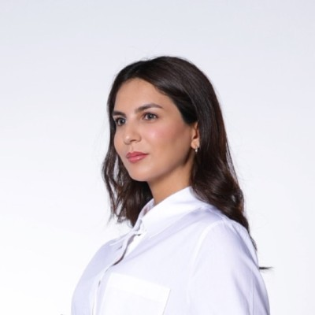

Research Scientist
King Abdullah University of Science and Technology
Department of Mechanical Engineering, Thuwal, Saudi Arabia
Email: rama.ayoub@kaust.edu.sa
Phone: +966 12 808 7551

I received my Masters degree in Applied Mathematics from the University of Bordeaux 1, France and my PhD from the University of La Rochelle, France. After completing my doctoral research on developing a new discretization method for partial differential equations, I joined ENS Mécanique & Microtechnique Besançon, France as Research and Teaching Assistant. Currently, I am a research scientist at King Abdullah University of Science and Technology, Saudi Arabia.